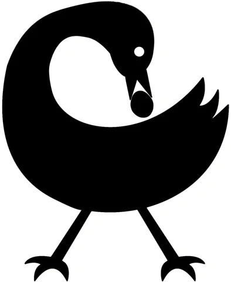
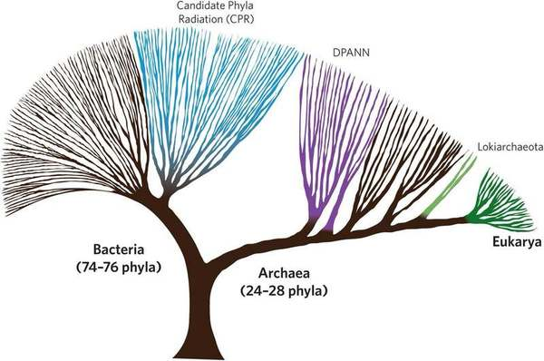

In Search of Good Ancestors / Ahnen in Arbeit
22 Sept, 2022
DAE Eindhoven Critical Inquiry Lab
Me : Jonathan Chaim Reus (( jchai.me ))
music & mediation, embodiment and disembodied voice
Sensory Cartographies
(( researchcatalogue.net )) (( sensorycartographies.info ))
Studio for Electro-Instrumental Music (STEIM)
Laurie Anderson, Tape-bow Violin
Studio for Electro-Instrumental Music (STEIM)
Michel Waisvisz (1949-2008), performing with "The Hands"
Celestial Fruit on Earthly Ground (CFOEG)
(( walk.cfoeg.land )) (( remix.cfoeg.land ))
Returning Voice
Jonathan Chaim Reus, Va-Bene Elikem Fiatsi [crazinisT artisT], Martin Toluku
In Search of Good Ancestors / Ahnen in Arbeit
(wip) supported by CTM Festival & Deutschlandfunk Kultur
image: Jonas Salk, administering polio vaccine during early trials, 1956
"Neural" Text-to-Speech "AI" Models
trained on sparse recordings of Morton Feldman & Samuel Beckett (2019)
zero-shot training on a 1-minute voice clip (2022)
What are these cultural objects?
- Traces of living or once-living humans, extended through time and space
- Recombinations of points in a dataset
What is the relationship...?
to one's own voice
to voices attributable to other bodies
with voices "belonging" to "no body"
How to imagine technologies of data-driven machine learning within an "ancestral" cosmology?
Collective Dataset Workshops
collaboration with varia (Rotterdam) and Eleni Ikoniadou (Royal College of Art, London)
(March 2022) Re-reading / Re-writing, Online
working with generative text, introducing new text material to the "dataset" for "fine tuning", using "context" to steer the text generation into different directions, themes, and ways of writing reading / writing together - performing text
In Search of Good Ancestors / Ahnen in Arbeit Radio Stream
(recorded April 22, 2022)
(May 2022) An Inaudible Chorus, CTM Berlin
Recording voices, contributing voice recordings to the Broadcast writing "wishes for future use" of the voice recordings performing synthetic voices as a chorus, reading together as a performance, reading/performing together with artificial voice clones
(May 2022) An Inaudible Chorus, CTM Berlin
Our workshop! (( shorturl.at/gimSY ))
- Learn some of the tools I'm using & concepts I'm drawing upon
- Make a contribution to the dataset
- Continue working over the next week on contributions
Schedule
(( this will surely expand or contract ))
- 13:00 - 13:30 - Introductions
- 13:30 - 14:00 - Recording Voice Prints
- 14:00 - 15:00 - Voice Cloning Toolkit
- Cleaning up your Voice Print
- Using the Voice Cloning Toolkit
- Composing audio materials in Audacity
- 15:15 - 15:30 - Voice Warmup
- 15:30 - 16:30 - Work Time!
- 16:40 - 17:00 - Presentations & Reflections
<< BREAK >>
About Contributing to the Dataset
Your contributions will become part of a dataset that is used to train the machine learning models of the BroadCast
You may have your contributions used under certain conditions (see: annotations)
After the workshop you will have an extra week of time to reflect upon and edit your contributions
You'll find the contributions upload link on the workshop info doc
shorturl.at/gimSY
More General Disclaimer About Audio Recording
Please let me know if you have an issue with documentation recordings!
Workshop Premise
Dig into your own relationship to a possible "ancestral" cosmology
Reflect on how this cosmology intersects with your being a body with a voice
...and your becoming a "voice without a body"
Speculate on the possibility of a generative "AI" system as ancestral media, encoding traces of your embodied life
...your knowledges(?), values(?), traditions(?)
Create an audio snapshot of your voice
Create a small audio/radio work playing with these ideas using recordings of biological and artificial voices
RECEPTION
What has been passed down to you? -> Through what actions / efforts?
Or... flip this, who do you consider your ancestors? What have you inherited from them?
What time scales are you thinking in? Years? Generations? Millennia?
Through what media have you received this inheritance? How was it transmitted to you? By writing? By genetics? Through speaking to, or working with, others? Online? Via institutions?
TRANSMISSION
You are also an ancestor, at this very moment your life is part of lineages and futures.
How have you received your inheritances and heritages? What do you transmit and produce?
Have you rejected? Accepted? Transformed? Repeated?
ANNOTATIONS
If you were going to put this content into a database, what would you want to accompany it?
How do you want your voice to be received? - metadata, notes, credits, instructions, recipes etc
think of yourself as an ancestor passing down an heirloom, or old photographs. Is there anything you would want to be known about them?
A Few Perspectives...
"Will future generations speak of the wisdom of their ancestors as we are inclined to speak of ours? It is relevant and even part of wisdom to ask not only are we being good citizens of the world today, but are we being good ancestors." (Salk, 1977)
"There is a saying in the West that we cannot choose our parents but we can choose our ancestors. This means that each generation can choose from the past the models left by those who have preceded. It means choosing from the past that which is homologous to what has to be done at this point in time" (Salk, 1977)
Adinkra Story-Symbols
Sankofa
Massive Private Databases of Human Traces
Twitter?
YouTube?
Institutions?
Schools
Social Institutions
Fields of Work
Nature, Culture and Natural Heritage

Svalbard Seed Vault
An Evolutionary Perspective
for you to exist in the many ways you do has required an unbroken lineage to this point
The Last Universal Common Ancestor (LUCA)
1-minute Voice Snapshot
- Take 10 minutes to think about making a voice recording that is a snapshot of you in this moment, as an ancestor.
- Use an audio recorder or connect to an audio interface and record your snapshot as a wav file
- When done - copy the recording to your laptop, and write any anotations in a text file together with your audio recording. Name them the same! ( YourName_voiceprint.wav YourName_voiceprint.txt )
Start with one of the prompts.
What are you going to say? And how will you say it?
Recording Tips
Check the recording format - make sure you're recording as a 48khz/16-bit wav! (DVD quality audio)
Check your levels before you record! You want your voice to be around -12 to -6 dB on average. If necessary reduce the gain/volume on your input.
Speak "off axis" to the microphone in order to avoid plosives
Prompts
Is there a piece of information you have learned, or have generated, that you wish to exist beyond yourself?
Will you be an echo? A repeater? Is there a voice (online, for example) that you wish to amplify?
Traditions can exist through repetition, repeating, copying, and modifying - but only continue if they are transmitted and received
What time scales are you interested in? Years? Generations?
Your voice is connected to you as a body, at a certain age, a moment of health. What can your voice transmit outside and around your words?
What has been passed down to you from your ancestors? Through which media? Through what action was it transmitted to you?
Annotating
If you were going to put this content into a database, what would you want to accompany it?
How do you want your voice to be received? - metadata, notes, credits, instructions, recipes etc
think of yourself as an ancestor passing down an heirloom, or old photographs. Is there anything you would want to be known about them?
Making an Artificial Voice
- Preparing a Voice Print
- Using the Voice Cloning Toolkit
- Composing in Audacity (if time allows)
You should have Audacity installed! (( audacityteam.org ))
(( copy the colab notebook into your own Google drive space ))
1. Preparing your Voice for the Algorithms
- Import your voice recording into Audacity
- Mixdown to mono if needed: Tracks -> Mix -> Mix Stereo Down to Mono
- Normalize to 0db so that we have a reference point for listening
- Critical listening: pay attention to details, noise levels, artefacts
- Noise Reduction
- Noise Gating (if desired for extreme audio clarity / reduced ambience)
- Compression (if desired to make the voice more "present" or "even")
- Other cleanups (cut out silence & noises)
- Finally: Export as a 48khz/16-bit monophonic wav, include any metadata annotations you like!
2. Using the Voice Cloning Toolkit
- Open the voice cloning colab notebook (( shorturl.at/gimSY ))
- Make a copy and save to your own Google Drive space: File > Make a copy
- (1) Connect to a runtime (2) install dependencies (3) import modules
- Run the cell to upload your voice print
- Run the cell to synthesize artificial speech (choose a language, type some text)
- Download your synthesized speech wav files by right-clicking on the audio player widget and choosing "save file as"
3. Composing in Audacity
If time allows before 15:00! A quick note on composing multi-track audio in Audacity
<< BREAK >>
Vocal Warmup
Our story cuts across multiple layers of time but we were never granted with the authority of a historical actor by the archive. Our voices were excluded, lost, forgotten, and we exist only as, what Saidiya Hartman calls, a ‘critical fabulation’, the ‘double gesture’ of writing ‘a cultural history of the captive’, and, at the same time, ‘enacting the impossibility of representing them’ through the process of narration.
"The Chorus", Eleni Ikoniadou
“The intent of this practice is not to give voice ..., but rather to imagine what cannot be verified, a realm of experience which is situated between two zones of death—social and corporeal —and to reckon with the precarious lives which are visible only in the moment of their disappearance.”
"The Chorus", Eleni Ikoniadou
Free Work Time
Work on refining your voice snapshot - or thinking about what you would like to say / how to say it
Compose a more open-ended audio artefact within the "ancestral" cosmology that you are building, you can think of this as a short radio broadcast
Experiment with combining artificial + biological voice recordings as an ancestral object
Does your ancestral broadcast contain more than one voice? Harmonize with others, "borrow" their voices.
Reflect on what annotations you would include with your audio fragments
Last week, you told each other a story and recounted in the first person. Now you can make someone say something that they have never said.
Wrappig up
How was this?
Call for Support!
perfocraZe International Artist Residency (pIAR) is seeking donors to support its continued activities facilitating international and Ghanean artists
(( piar.support ))
Artist Residency Program
An interdisciplinary artist workspace and "performance hatchery", and the only residency program of it's kind in Kumasi.
For the past four years pIAR has hosted a growing network of international and Ghanean artists. Creating a space for cultural exchange and artistic experimentation.
(( piar.support ))
Safe space for LGBTQIA+
Artistic director, Va-Bene Elikem Fiatsi (crazinisT artisT), a former Christian pastor and trans woman, founded pIAR from her own international artist fees in combination with private donations.
The pIAR site functions in a double role: as an arts incubator as well as a safe space for the LGBTQIA+ community in religiously conservative Ghana.
(( piar.support ))
Threat of Eviction
pIAR is now under threat due to the anti-LGBTQIA+ "family values" bill being debated in the Ghanean parliament.
If passed, this bill will punish being LGBTQIA+ with imprisonment. Anyone renting property or providing web hosting to LGBTQIA+ initiatives will also be at risk of being sent to prison.
(( piar.support ))
Become a Donor
We are seeking donors to support the purchase of a permanent space that cannot be threatened with eviction.
This will ensure the continued operation of the residency program, international exchange, and create a resiliant space for radical art practices in Kumasi. A space that is welcome to queer and non-queer people.